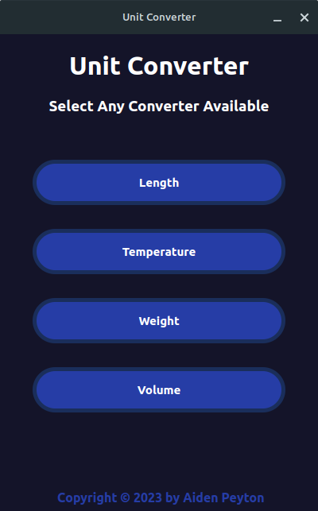
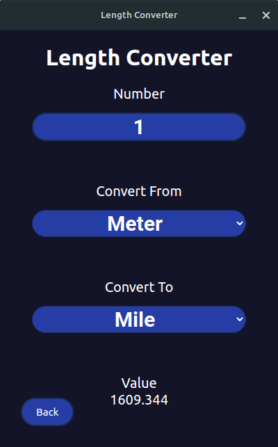
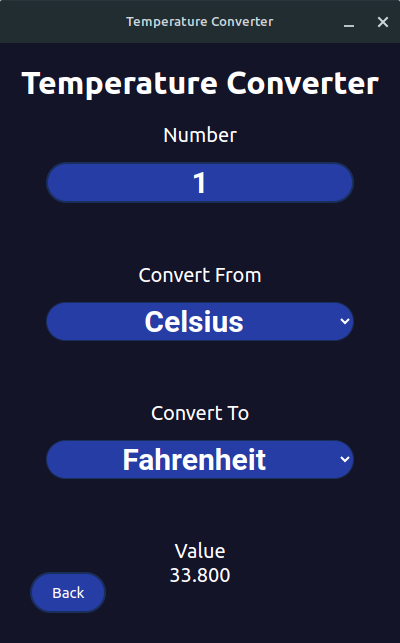
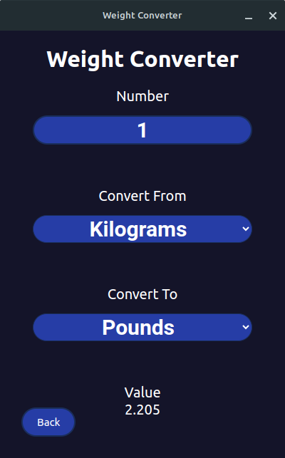
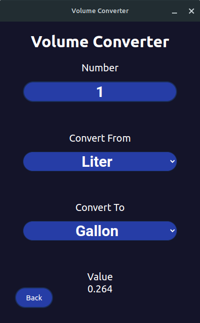

Unit Converter Documentation
Different Converters
There are four converters available to use in the program.

Length Converter
The length converter converts between the metric and imperial system for length. The metric system uses kilometers, meters, centimeters, and millimeters. The imperial system uses miles, feet, inches, and yards.

Temperature Converter
The temperature converter converts between Kelvin, Celsius, and Fahrenheit.

Weight Converter
The weight converter converts between the metric and imperial system for weight. The metric system uses kilograms, grams, and milligrams. The imperial system uses pounds and ounces.

Volume Converter
The volume converter converts between the metric and imperial system for volume. The metric system uses cubic meters, liters, and milliliters. The imperial system uses gallons, quarts, pints, cups, and ounces.
